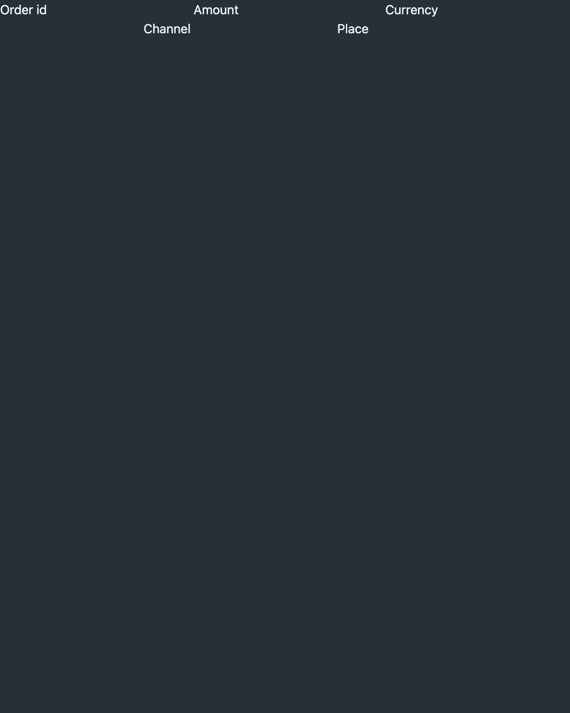
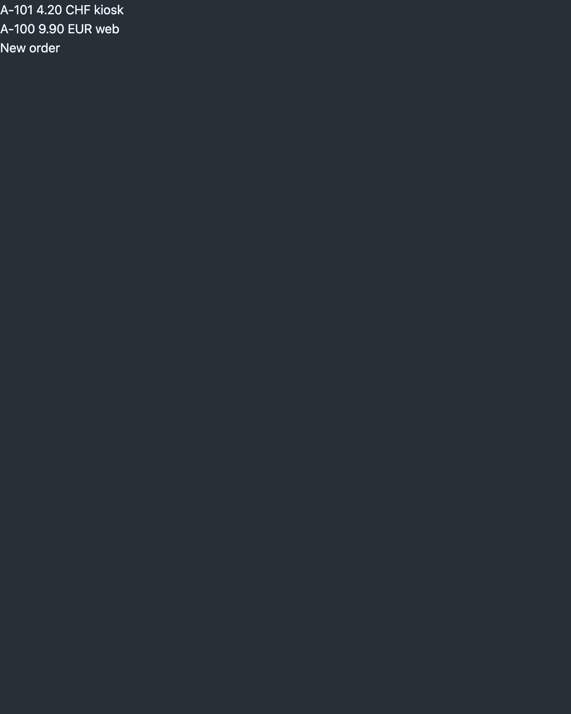
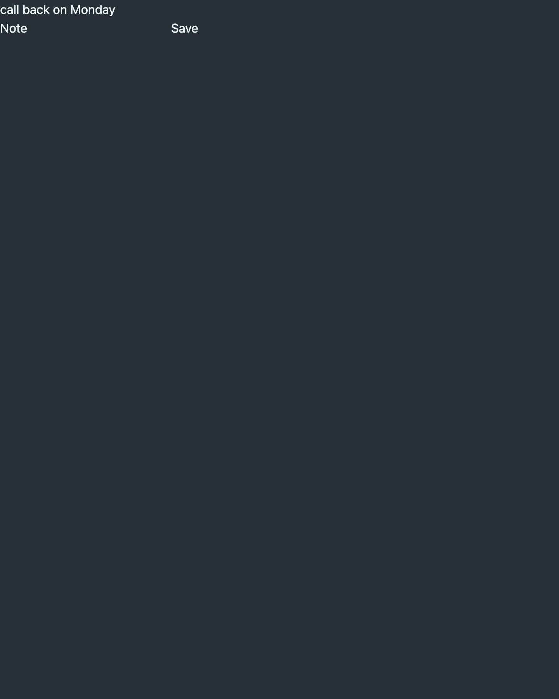

BEAML is a typed language for the BEAM. It compiles to Elixir. One compiler knows every stage, from the type check to the trace in production, so that agents make fewer errors.
Design principle (DL-126): declarations carry shape and policy, from types and versions to effects, fates, retention and tracing. Expressions carry computation only. The compiler derives the rest.
verified built, tests green, evidence retaineddecided owner decision recorded, not builtconcept goal stated, no decision yet
1Type system and compiler
verified · partly
Rust-level diagnostics. Compile times faster than Go.
Verified
Records, variants and nested patterns compile to Elixir with boundary checks at the generated wrappers (experiment 0001)
Error messages with a help line that names the fix
Tree-sitter grammar and editor highlighting
One type form for every type; a constructor is the only way in (DL-092, slice 6b step 3)
Enum literals and enum constructors as function clauses, first matching signature wins, unreachable clause is an error (DL-082 to DL-088, steps 4, 7 and 8)
Pipes in any expression (DL-086, step 5)
Constructor types are structs at the host, built through T.new/1 (DL-106, DL-117, step 11). Limit: a struct update or a forged __struct__ map passes the check
A constructor is pure: a constructor that reaches an effect is a compile error (DL-120, step 12b)
RED TEAM 01 repairs: the stored check accepts a valid enum record, the action log writes whole lines, and the DRIFT status fails on a crash, with slice 6 in the full run (C1, B3, C3, C4, DL-135)
Decided, next
A stored value that moves to another known enum literal blocks the build (RED TEAM 01 D1, DL-140)
Concept
Compile-time budget against Go
Generics
Simple rules on a type field (where); the constructor stays for the complex case (DL-126)
2Types at runtime
verified · partly
Types persist with the data. No any, no casts. A type change is checked against every deployed store.
Verified
Every stored record carries its TYPE VERSION and fingerprint
migrate chain with rename, add, drop; old versions derived backwards (experiment 0004, slices 2 to 5)
Build fails when a stored version has no path to the newest
retire for deleted effects, dead-line warnings, --remove-dead
VERSION MARK on the type line after a squash
Unknown(String) as a declared variant for outside data (DL-062, DL-065, slice 6b step 4)
A stored record holds the typed projection of the response, never the raw body (DL-105, records version 2, step 6a)
The --stored check runs the generated Elixir constructors over the stored values (DL-121, step 13)
A stored value that fails a new rule blocks the build (DL-102, steps 8 and 13); a removed enum literal with stored values blocks it too (DL-122, DL-124, step 13). Interim: no fate syntax exists yet to lift the block
Decided, next
Production stores report versions by a live query of the nodes; registry and exports later (DL-094)
Concept
Lazy or eager migration, batches, rollback windows
Fate operations in a migrate step: quarantine, retire … keep, redact, map (DL-125)
Retention per type, keep N days (DL-126)
Environments with lower priority
3Typed errors
verified · partly
Every failure has a type. Total functions; the compiler proves the cases.
-> T ! E1 | E2: the failure position; success and failure types never overlap (DL-092, DL-093, slice 6b step 2)
Decided, next
Division: ! DivByZero or a NonZeroInt type with a constructor (DL-030)
No guessing fallback in migrations
Concept
Static analysis of failure paths across modules
4Modules follow the file system
concept
The directory tree is the namespace. No import ceremony.
Concept
One file, one module; the path is the name
Interfaces as behaviour contracts, a later round
5Tests and evals for agents
concept
Tests and eval cases are part of the language, so that an agent can write, run and read them in one place.
Verified
Source-linked REPLAY RUN of a captured call (experiment 0003)
Concept
Test syntax in the language: examples in the source as tests and replay fixtures (DL-126)
Eval framework for agent outputs
6Production
verified · partly
Typed traces, dashboards, alerts and feature flags from the same types. Privacy first.
Verified
One order located across two HTTP services, spans and logs (experiment 0002)
Captured responses replay in isolation (experiment 0003)
A step gets a span when it is an effect or reaches one, transitively; the default span set is the effect path (DL-108, DL-119, slice 6b step 12)
redacted fields stay out of records, spans and events; an effect sends one only with with <field> (DL-059, DL-089, slice 6b step 6b)
A direct copy of a redacted value into a plain field, a payload or a failure is a compile error (DL-105, DL-112, slice 6b step 6c). Limit: a derived copy is not checked
Entry points declared as inbound effects: an ENTRY LINE effect ui.place PlaceForm -> Payment ! PaymentError = ui.event("place") |> place generates ui_place/1, the decode of the UI params, the root span and an ENTRY RECORD; a bad form gives a Rejected struct; --stored checks the accepted entries (DL-128, DL-130 to DL-134, DL-138, slice 6d). Limit: an enum or constructor field below the top level of the form TYPE is a compile error
Record format v3: response and entry records share one 14-key record core with outcome and reason at capture; --stored reads version 3 only and skips records rejected at capture (DL-143). Limit: the digest is not yet checked (D035)
Several effects and ENTRY LINES per source, shared parts written once, replay by operation; a source with an ENTRY LINE names its module from the file, orders.beaml gives Orders (slice 6e). Limit: one effect per flow
A stored record or row with a wrong digest stops the build, before every other --stored check (DL-164, step P2b)
Database transports db.put, db.get, db.list on one records table: typed rows through the host BeamlDb, replay without the database, --stored checks the row snapshot; a String-only TYPE change reads old rows through migrate (DL-127, DL-129, DL-137, P4). The Order chain waits on M4. Row shape check (P4c): --stored blocks a stored row or db response record whose declared String field is missing or not a String, at the row's own TYPE VERSION; http records keep the gap (default A, open); TEST repair done, re-check PASS (2026-11-08)
The prototype (experiment 0005): a Phoenix LiveView page on local Postgres; a form submit enters BEAML through Orders.ui_place/1, is stored as a typed row and comes back through db.list; an old row reads through migrate, and a stricter type blocks the build against the live rows (DL-127 to DL-129, DL-144). Limit: N9 waits on the fate slice; demo only, no deploy
Decided, next
Migration checks report counts per environment, never values
Fate slice (quarantine, N9) after the OWNER answers M3, M4, M5 (D036)
OWNER walk-through of the prototype defaults (D037)
Concept
Policy on effect lines: retry, timeout, idempotent (DL-126)
Trace resolution per subtree, time-limited, as an observatory setting (DL-119, D018)
Typed dashboards and alerts
Feature flags
Implicit PII flow in the compiler: derived copies (DL-029)



Experiment 0005 screens: form, list, notes (demo rows, dark mode). The form inputs are not visible in dark mode yet.
7Developer and agent experience
verified · partly
The CLI and its JSON output are the agent interface. The editor shows the same facts to people. Maintained with every other part, not as a later phase.
Verified
Tree-sitter grammar, Zed extension, highlighting
Compiler errors with a help line that names the fix
Action log of compiler runs, one whole line per event, also under parallel runs (RED TEAM 01 B3 repaired)
Grammar for the decided forms (slice 6a, 12 of 12 checks)
beaml fmt: one canonical form, aligned clauses, version mark form (DL-081, DL-083, DL-104, slice 6b step 10)
Decided, next
beaml check --json: diagnostics with positions, for agents and editors
Language server on that JSON: diagnostics and hover first; Zed, then VS Code
Concept
Go to definition, rename
Migration checks and traces beside the source
What the source looks like today
// card_holder is PII: it stays out of logs, traces and records (DL-059).typeOrder{order_id:Stringcard_holder:redactedString}typePaymentError{reason:String}typeReceipt{order_id:Stringholder:redactedString}typePaymentv3{order_id:Stringstate:Stringcard_holder:String}migratePaymentv1->v2{renamestatus->state}migratePaymentv2->v3{addcard_holder:String=""}enumPaymentState{Authorized="ok"Pending="pending"Unknown(String)}// with card_holder: the field goes on the wire, never into the record (DL-089).effectpayments.authorizeOrder->Payment!PaymentError=http.post("payments/authorize")withcard_holderretirepayments.refundkeep30daysfnplace order:Order->Payment!PaymentError=
order
|>payments.authorize// A copy into a plain field is a compile error (DL-112); this target is redacted.fnreceiptOrder{order_id,card_holder}->Receipt=Receipt{order_id: order_id,holder: card_holder }
Only the newest type is declared. The chain holds the history. card_holder is redacted: the effect sends it on the wire with with; the record, the span and the event never hold it. receipt copies it into a redacted field; a plain holder is a compile error (DL-112). This sample compiles with the compiler at git 5b7feb92 (--stored with an empty snapshot: exit 0, three dead-line warnings). Highlighted with the project grammar.
The inbound side: an ENTRY LINE (slice 6d)
// The form TYPE: the COMPILER decodes the UI params into it (String keys, DL-101).enumChannel{Web="web"App="app"Unknown(String)}typePlaceForm{order_id:Stringchannel:Channel}typeOrder{order_id:String}typePayment{order_id:Stringstatus:String}typePaymentError{reason:String}// Leaves the module: recorded live, substituted in a REPLAY RUN.effectpayments.authorizeOrder->Payment!PaymentError=http.post("payments/authorize")// Enters the module: the host calls ui_place(params) (DL-130, DL-131).// The head TYPES must equal those of fn place (drift rule). A bad form gives Rejected (DL-133).effectui.placePlaceForm->Payment!PaymentError=ui.event("place")|>placefnto_orderPlaceForm{order_id,channel}->Order=Order{order_id: order_id }fnplace form:PlaceForm->Payment!PaymentError=
form
|>to_order|>payments.authorize
An inbound effect is written like an outbound one (DL-130). The head TYPES must equal those of fn place; a difference is a compile error. The host calls the generated ui_place(params) from handle_event (DL-131); a form that fails the decode gives {:error, %Rejected{reason: "decode"}}, apart from PaymentError (DL-133). Each call writes one ENTRY RECORD with its capture outcome (DL-138, DL-141). This sample compiles with the compiler at git 545dded0 (--stored with an empty snapshot: exit 0) and beaml fmt keeps it. Highlighted with the project grammar.